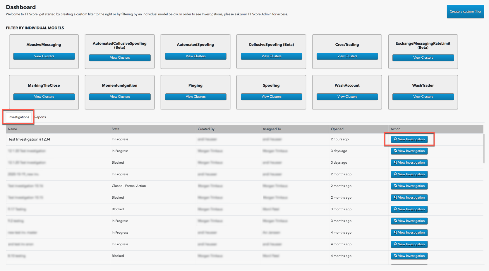
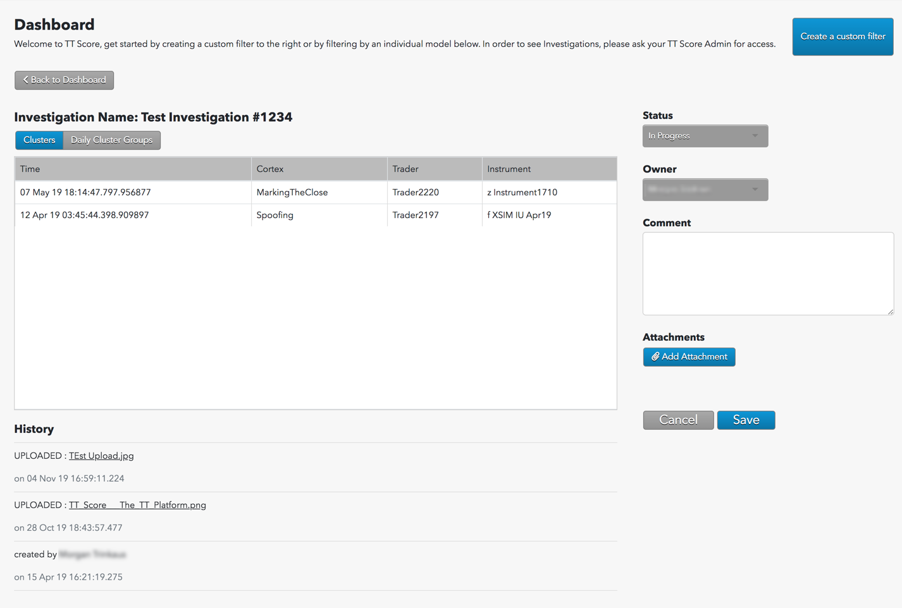
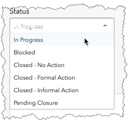

The investigation details appear.

The following sections are included on this screen:
- Clusters and Daily Group Clusters: Lists the clusters and cluster groups being investigated.
- Status: Shows a list of state changes, and allows you to change the status.
- Owner: Shows a list of owners who can be assigned to the investigation, and allows you to change owners. Note: Only users with TT Score Administrator permissions are listed in the owner selector.
- History: Shows the full history of investigation activity, including who created the investigation.
- Comment: Shows a history of comments added to the investigation, and allows you to add comments or a final disposition and upload attachments. Note: A previously added comment cannot be edited or deleted. To address a previously added comment, you must add a new one.
